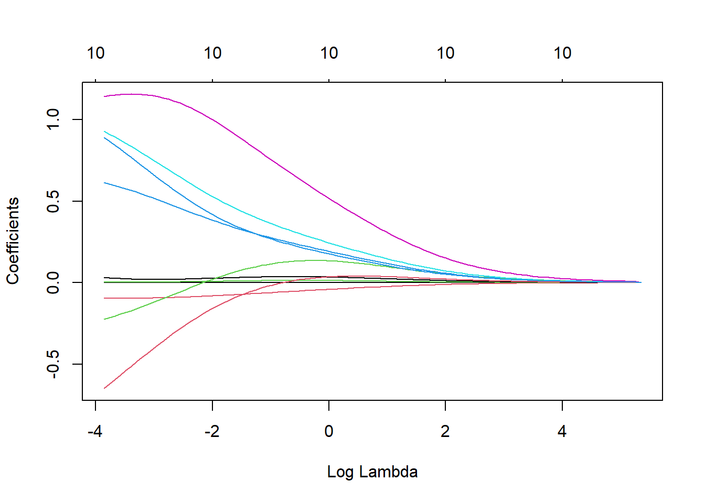
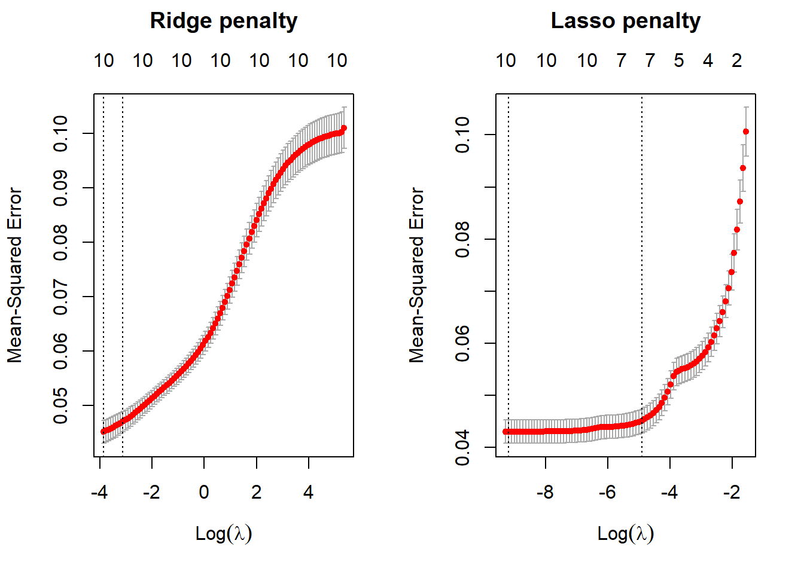

abalone_data <- read_csv(here("posts/2023-09-20-abalone_age_ML/abalone-data.csv"))Introduction
Abalones are marine snails that are consumed by many cultures. Determining the age of abalone can be a time-consuming task, so rather than cutting the shell through the cone, staining it, and counting the number of rings through a microscope, other, easier to obtain, measurements can be used to predict the age of an abalone.
In this blog, I will be using regularized regression machine learning models made using R to predict the age of abalone based on a dataset with variables related to the sex, physical dimensions of the shell, and various weight measurements, along with the number of rings in the shell.
Regularized Regression Models
Regularization of regression models helps prevent overfitting of data onto the model, therefore reducing the variance of the model predictions. Regularization means having the model self-regulate to prevent overfitting by making sure its regression coefficients don’t get too large.
Regularized regression is an alternative to Ordinary Least Squares (OLS) regression. OLS Regression chooses a line (from the many that can be found) that minimizes the sum of squared errors (SSE).
Regularized regression introduces a penalty term to OLS Regression that constrains the size of coefficients to the point where the coefficient can only increase if there is a comparable decrease in model’s function. Introducing this penalty is intended to improve the model’s predictive performance.
I will be evaluating two types of regularized regression in this blog, ridge regression and lasso regression.
Data Exploration
Data Splitting
I’ll start with splitting the data into a 70/30 training/test split.
I’ll be using the caret package in our approach to this task, as it supports the cration of predictive models. I will use the glmnet package in order to perform ridge regression and the lasso. The main function in this package is glmnet(), which can be used to fit ridge regression models, lasso models, and more. In particular, we must pass in an x matrix of predictors as well as a y outcome vector , and we do not use the y∼x syntax.
#setting seed for reproducibility
set.seed(711)
# take a stratified sample
abalone_data_split <- initial_split(data = abalone_data,
prop = .70,
strata = Rings) #stratify by outcome variable
abalone_data_split<Training/Testing/Total>
<2922/1255/4177>abalone_data_train <- training(abalone_data_split) #takes training portion from split data
abalone_data_test <- testing(abalone_data_split) #takes test portion from split data
#essentially have two new data setsabalone_data_train# A tibble: 2,922 × 10
...1 Sex Length Diameter Height Whole_weight Shucked_weight Viscera_weight
<dbl> <chr> <dbl> <dbl> <dbl> <dbl> <dbl> <dbl>
1 2 M 0.35 0.265 0.09 0.226 0.0995 0.0485
2 5 I 0.33 0.255 0.08 0.205 0.0895 0.0395
3 6 I 0.425 0.3 0.095 0.352 0.141 0.0775
4 17 I 0.355 0.28 0.085 0.290 0.095 0.0395
5 36 M 0.465 0.355 0.105 0.480 0.227 0.124
6 38 F 0.45 0.355 0.105 0.522 0.237 0.116
7 43 I 0.24 0.175 0.045 0.07 0.0315 0.0235
8 44 I 0.205 0.15 0.055 0.042 0.0255 0.015
9 45 I 0.21 0.15 0.05 0.042 0.0175 0.0125
10 46 I 0.39 0.295 0.095 0.203 0.0875 0.045
# ℹ 2,912 more rows
# ℹ 2 more variables: Shell_weight <dbl>, Rings <dbl>skim(abalone_data_train) #takes a summary of this data| Name | abalone_data_train |
| Number of rows | 2922 |
| Number of columns | 10 |
| _______________________ | |
| Column type frequency: | |
| character | 1 |
| numeric | 9 |
| ________________________ | |
| Group variables | None |
Variable type: character
| skim_variable | n_missing | complete_rate | min | max | empty | n_unique | whitespace |
|---|---|---|---|---|---|---|---|
| Sex | 0 | 1 | 1 | 1 | 0 | 3 | 0 |
Variable type: numeric
| skim_variable | n_missing | complete_rate | mean | sd | p0 | p25 | p50 | p75 | p100 | hist |
|---|---|---|---|---|---|---|---|---|---|---|
| …1 | 0 | 1 | 2087.01 | 1210.03 | 2.00 | 1033.50 | 2103.50 | 3121.75 | 4177.00 | ▇▇▇▇▇ |
| Length | 0 | 1 | 0.52 | 0.12 | 0.07 | 0.45 | 0.54 | 0.62 | 0.81 | ▁▂▅▇▂ |
| Diameter | 0 | 1 | 0.41 | 0.10 | 0.06 | 0.35 | 0.42 | 0.48 | 0.65 | ▁▂▅▇▁ |
| Height | 0 | 1 | 0.14 | 0.04 | 0.00 | 0.12 | 0.14 | 0.16 | 1.13 | ▇▁▁▁▁ |
| Whole_weight | 0 | 1 | 0.83 | 0.49 | 0.00 | 0.44 | 0.80 | 1.16 | 2.83 | ▇▇▅▁▁ |
| Shucked_weight | 0 | 1 | 0.36 | 0.22 | 0.00 | 0.19 | 0.33 | 0.51 | 1.35 | ▇▇▃▁▁ |
| Viscera_weight | 0 | 1 | 0.18 | 0.11 | 0.00 | 0.09 | 0.17 | 0.25 | 0.76 | ▇▇▂▁▁ |
| Shell_weight | 0 | 1 | 0.24 | 0.14 | 0.00 | 0.13 | 0.23 | 0.33 | 0.90 | ▇▇▃▁▁ |
| Rings | 0 | 1 | 9.94 | 3.22 | 1.00 | 8.00 | 9.00 | 11.00 | 29.00 | ▁▇▂▁▁ |
Fit a Regularized Regression Model
Ridge regression models:
Pushes many correlated features toward each other, don’t have one wildly positive, another wildly negative
Does not perform feature selection and retains all available features in final model
Tuning parameter is lambda:
- Lambda = 0, no effect & objective function of simply minimizing SSE
- As lambda increase to infinity, penalty becomes large and forces coefficients toward zero (not all the way)
Lasso regression models:
Will push coefficients all the way to zero
Improved model and conducts automated feature selection
Least absolute shrinkage and selection operator
I’ll be using the model.matrix() function to create a predictor matrix, x, and assign the Rings variable to an outcome vector, y.
pred_x <- model.matrix(Rings ~ ., #sale price predicted by all predictors
abalone_data_train)[,-1] #take out first column
# transform y with log() transformation
out_y <- log(abalone_data_train$Rings)Fitting a ridge model (controlled by the alpha parameter) using the glmnet() function, and making a plot showing how the estimated coefficients change with lambda. Lambda is a tuning parameter that helps keep this model from over-fitting to the training data. Lamda is the tuning parameter for both lasso and ridge regression.
#fit a ridge model
ridge <- glmnet(x = pred_x,
y = out_y,
alpha = 0)
#plot() the glmnet model object
plot(ridge, xvar = "lambda")
Using k-fold Cross Validation Resampling and Tuning Models
A methods of estimating a model’s generalization error is k-fold cross validation. Tuning is the process of finding the optimal value of lambda.
I will fit a ridge regression model and a lasso model, both with using cross validation to compare which model is a better predictor. The glmnet package provides a cv.glmnet() function to do this (similar to the glmnet() function that we just used). Use the alpha argument to control which type of model you are running. Plot the results.
# apply CV ridge regression
ridge_reg <- cv.glmnet(
x = pred_x,
y = out_y,
alpha = 0 #pure ridge is alpha = 0
)
# apply CV lasso regression
lasso_reg <- cv.glmnet(
x = pred_x,
y = out_y,
alpha = 1 #pure lasso is lasso = 0
)
# plot results
par(mfrow = c(1, 2))
plot(ridge_reg, main = "Ridge penalty\n\n")
# first line is minimum lambda
#second line is 1 sd away
plot(lasso_reg, main = "Lasso penalty\n\n")
The subtitles/upper x axis indicate the number of features in the model, the lower x axis is showing the value of the penalty of log(lamda), and the y axis is showing the 10 fold CV mean squared error between the predicted outcome variable and the predictor variable with the corresponding penalty log(lambda). The left dotted lines in each plot are the values of the penalty log(lambda) that produces the minimum, mean cross-validated errors. The right dotted lines in each plot indicate the values of the penalty log(lambda) that provide the most regularized model where the cross-validated error is within one standard error of the minimum MSE. The red dots make up the cross validation curve, with the error bars indicating the upper and lower standard deviations. With both ridge and lasso regression, the MSE increases as the penalty increases. Therefore, the performance of the models gets worse as the value of lambda increases.
Inspecting the ridge model object created with cv.glmnet(), I want to know the minimum mean squared error (MSE) and the value of lambda associated with this minimum MSE. MSE measures the amount of error in a model.
#inspect ridge model
head(ridge_reg)$lambda
[1] 210.81570089 192.08741505 175.02289851 159.47434659 145.30708517
[6] 132.39840421 120.63649488 109.91948117 100.15453741 91.25708434
[11] 83.15005649 75.76323464 69.03263769 62.89996842 57.31210858
[16] 52.22065881 47.58151941 43.35450837 39.50301333 35.99367450
[21] 32.79609566 29.88258091 27.22789479 24.80904366 22.60507659
[26] 20.59690389 18.76713172 17.09991146 15.58080246 14.19664691
[31] 12.93545592 11.78630567 10.73924276 9.78519803 8.91590801
[36] 8.12384331 7.40214346 6.74455744 6.14538955 5.59945008
[41] 5.10201036 4.64876182 4.23577864 3.85948374 3.51661784
[46] 3.20421120 2.91955791 2.66019243 2.42386827 2.20853849
[51] 2.01233802 1.83356746 1.67067838 1.52225991 1.38702654
[56] 1.26380692 1.15153380 1.04923471 0.95602359 0.87109309
[61] 0.79370758 0.72319679 0.65894998 0.60041068 0.54707185
[66] 0.49847149 0.45418866 0.41383979 0.37707540 0.34357706
[71] 0.31305463 0.28524371 0.25990345 0.23681434 0.21577641
[76] 0.19660743 0.17914137 0.16322694 0.14872631 0.13551387
[81] 0.12347519 0.11250600 0.10251128 0.09340446 0.08510666
[86] 0.07754602 0.07065705 0.06438007 0.05866072 0.05344946
[91] 0.04870116 0.04437468 0.04043256 0.03684064 0.03356782
[96] 0.03058575 0.02786859 0.02539283 0.02313700 0.02108157
$cvm
[1] 0.10105059 0.10021351 0.10007332 0.09997545 0.09986844 0.09975146
[7] 0.09962364 0.09948404 0.09933164 0.09916535 0.09898401 0.09878637
[13] 0.09857111 0.09833683 0.09808204 0.09780515 0.09750460 0.09717867
[19] 0.09682560 0.09644358 0.09603080 0.09558539 0.09510553 0.09458941
[25] 0.09403528 0.09344150 0.09280658 0.09212920 0.09140827 0.09064299
[31] 0.08983290 0.08897794 0.08807850 0.08713547 0.08615028 0.08512497
[37] 0.08406218 0.08296516 0.08183780 0.08068461 0.07951063 0.07832139
[43] 0.07712282 0.07592114 0.07472273 0.07353398 0.07236116 0.07121025
[49] 0.07008683 0.06899589 0.06794177 0.06692804 0.06595745 0.06503187
[55] 0.06415232 0.06331898 0.06253121 0.06178771 0.06108651 0.06042511
[61] 0.05980021 0.05920928 0.05864996 0.05811806 0.05761006 0.05712263
[67] 0.05665263 0.05619735 0.05575652 0.05532311 0.05490039 0.05448054
[73] 0.05406846 0.05365618 0.05324998 0.05284175 0.05243929 0.05203758
[79] 0.05163540 0.05123857 0.05084387 0.05045044 0.05006493 0.04968524
[85] 0.04931157 0.04894272 0.04858578 0.04823904 0.04790330 0.04757925
[91] 0.04726772 0.04696939 0.04668484 0.04641446 0.04615849 0.04591692
[97] 0.04569012 0.04547725 0.04527888 0.04510068
$cvsd
[1] 0.003770703 0.003759516 0.003723304 0.003719699 0.003715752 0.003711432
[7] 0.003706707 0.003701537 0.003695885 0.003689707 0.003682957 0.003675584
[13] 0.003667536 0.003658755 0.003649180 0.003638743 0.003627375 0.003615005
[19] 0.003601552 0.003586936 0.003571069 0.003553863 0.003535225 0.003515060
[25] 0.003493272 0.003469763 0.003444435 0.003417195 0.003387948 0.003356609
[31] 0.003323098 0.003287343 0.003249286 0.003208884 0.003166109 0.003120955
[37] 0.003073437 0.003023599 0.002971510 0.002917270 0.002861010 0.002802894
[43] 0.002743118 0.002681910 0.002619524 0.002556245 0.002492378 0.002428246
[49] 0.002364185 0.002300534 0.002237633 0.002175816 0.002115398 0.002056677
[55] 0.001999921 0.001945370 0.001893229 0.001843668 0.001796823 0.001752805
[61] 0.001711763 0.001673478 0.001638242 0.001606037 0.001576812 0.001550563
[67] 0.001527294 0.001507006 0.001489580 0.001475266 0.001463850 0.001455632
[73] 0.001450352 0.001448445 0.001449546 0.001454223 0.001461934 0.001473238
[79] 0.001488074 0.001505921 0.001527271 0.001551951 0.001579158 0.001609156
[85] 0.001641469 0.001676191 0.001711731 0.001748420 0.001785621 0.001822769
[91] 0.001859352 0.001894881 0.001928907 0.001961034 0.001990928 0.002018321
[97] 0.002043051 0.002065043 0.002084141 0.002099895
$cvup
[1] 0.10482129 0.10397302 0.10379663 0.10369515 0.10358419 0.10346289
[7] 0.10333035 0.10318558 0.10302753 0.10285506 0.10266697 0.10246196
[13] 0.10223865 0.10199558 0.10173122 0.10144390 0.10113198 0.10079368
[19] 0.10042715 0.10003052 0.09960187 0.09913926 0.09864076 0.09810447
[25] 0.09752855 0.09691127 0.09625102 0.09554639 0.09479621 0.09399960
[31] 0.09315600 0.09226529 0.09132779 0.09034435 0.08931639 0.08824593
[37] 0.08713562 0.08598876 0.08480931 0.08360188 0.08237164 0.08112428
[43] 0.07986594 0.07860305 0.07734225 0.07609022 0.07485353 0.07363850
[49] 0.07245101 0.07129642 0.07017940 0.06910386 0.06807285 0.06708855
[55] 0.06615225 0.06526435 0.06442444 0.06363137 0.06288333 0.06217791
[61] 0.06151197 0.06088275 0.06028820 0.05972409 0.05918687 0.05867319
[67] 0.05817993 0.05770435 0.05724610 0.05679838 0.05636424 0.05593617
[73] 0.05551881 0.05510462 0.05469953 0.05429597 0.05390122 0.05351082
[79] 0.05312347 0.05274449 0.05237114 0.05200240 0.05164409 0.05129440
[85] 0.05095304 0.05061891 0.05029751 0.04998746 0.04968892 0.04940201
[91] 0.04912707 0.04886428 0.04861374 0.04837549 0.04814942 0.04793524
[97] 0.04773317 0.04754229 0.04736302 0.04720058
$cvlo
[1] 0.09727988 0.09645399 0.09635002 0.09625576 0.09615269 0.09604003
[7] 0.09591694 0.09578251 0.09563576 0.09547565 0.09530105 0.09511079
[13] 0.09490357 0.09467807 0.09443286 0.09416641 0.09387723 0.09356367
[19] 0.09322405 0.09285665 0.09245973 0.09203153 0.09157031 0.09107435
[25] 0.09054201 0.08997174 0.08936215 0.08871200 0.08802032 0.08728638
[31] 0.08650980 0.08569060 0.08482922 0.08392659 0.08298417 0.08200402
[37] 0.08098875 0.07994156 0.07886629 0.07776734 0.07664962 0.07551849
[43] 0.07437970 0.07323923 0.07210320 0.07097773 0.06986878 0.06878201
[49] 0.06772264 0.06669536 0.06570414 0.06475223 0.06384205 0.06297520
[55] 0.06215240 0.06137361 0.06063798 0.05994404 0.05928968 0.05867230
[61] 0.05808845 0.05753580 0.05701171 0.05651202 0.05603324 0.05557206
[67] 0.05512534 0.05469034 0.05426694 0.05384785 0.05343654 0.05302491
[73] 0.05261811 0.05220773 0.05180044 0.05138753 0.05097735 0.05056435
[79] 0.05014733 0.04973265 0.04931660 0.04889849 0.04848577 0.04807608
[85] 0.04767011 0.04726653 0.04687405 0.04649062 0.04611768 0.04575648
[91] 0.04540836 0.04507451 0.04475593 0.04445343 0.04416757 0.04389860
[97] 0.04364707 0.04341221 0.04319474 0.04300078
$nzero
s0 s1 s2 s3 s4 s5 s6 s7 s8 s9 s10 s11 s12 s13 s14 s15 s16 s17 s18 s19
10 10 10 10 10 10 10 10 10 10 10 10 10 10 10 10 10 10 10 10
s20 s21 s22 s23 s24 s25 s26 s27 s28 s29 s30 s31 s32 s33 s34 s35 s36 s37 s38 s39
10 10 10 10 10 10 10 10 10 10 10 10 10 10 10 10 10 10 10 10
s40 s41 s42 s43 s44 s45 s46 s47 s48 s49 s50 s51 s52 s53 s54 s55 s56 s57 s58 s59
10 10 10 10 10 10 10 10 10 10 10 10 10 10 10 10 10 10 10 10
s60 s61 s62 s63 s64 s65 s66 s67 s68 s69 s70 s71 s72 s73 s74 s75 s76 s77 s78 s79
10 10 10 10 10 10 10 10 10 10 10 10 10 10 10 10 10 10 10 10
s80 s81 s82 s83 s84 s85 s86 s87 s88 s89 s90 s91 s92 s93 s94 s95 s96 s97 s98 s99
10 10 10 10 10 10 10 10 10 10 10 10 10 10 10 10 10 10 10 10 #find minimum MSE
min(ridge_reg$cvm)[1] 0.04510068#find value of lambda at this minimum val
ridge_reg$lambda.min[1] 0.02108157The minimum MSE of the cross validation folds is 0.0427. The corresponding lambda value with this MSE minimum is 0.0215.
I’ll do the same for the lasso model.
#inspect ridge model
head(lasso_reg)$lambda
[1] 2.108157e-01 1.920874e-01 1.750229e-01 1.594743e-01 1.453071e-01
[6] 1.323984e-01 1.206365e-01 1.099195e-01 1.001545e-01 9.125708e-02
[11] 8.315006e-02 7.576323e-02 6.903264e-02 6.289997e-02 5.731211e-02
[16] 5.222066e-02 4.758152e-02 4.335451e-02 3.950301e-02 3.599367e-02
[21] 3.279610e-02 2.988258e-02 2.722789e-02 2.480904e-02 2.260508e-02
[26] 2.059690e-02 1.876713e-02 1.709991e-02 1.558080e-02 1.419665e-02
[31] 1.293546e-02 1.178631e-02 1.073924e-02 9.785198e-03 8.915908e-03
[36] 8.123843e-03 7.402143e-03 6.744557e-03 6.145390e-03 5.599450e-03
[41] 5.102010e-03 4.648762e-03 4.235779e-03 3.859484e-03 3.516618e-03
[46] 3.204211e-03 2.919558e-03 2.660192e-03 2.423868e-03 2.208538e-03
[51] 2.012338e-03 1.833567e-03 1.670678e-03 1.522260e-03 1.387027e-03
[56] 1.263807e-03 1.151534e-03 1.049235e-03 9.560236e-04 8.710931e-04
[61] 7.937076e-04 7.231968e-04 6.589500e-04 6.004107e-04 5.470718e-04
[66] 4.984715e-04 4.541887e-04 4.138398e-04 3.770754e-04 3.435771e-04
[71] 3.130546e-04 2.852437e-04 2.599034e-04 2.368143e-04 2.157764e-04
[76] 1.966074e-04 1.791414e-04 1.632269e-04 1.487263e-04 1.355139e-04
[81] 1.234752e-04 1.125060e-04 1.025113e-04 9.340446e-05
$cvm
[1] 0.10062068 0.09363761 0.08719941 0.08178955 0.07731528 0.07361844
[7] 0.07056437 0.06804298 0.06596307 0.06424436 0.06280284 0.06147836
[13] 0.06025119 0.05918640 0.05830676 0.05757759 0.05697411 0.05647471
[19] 0.05606198 0.05572053 0.05543812 0.05520472 0.05499648 0.05473028
[25] 0.05445873 0.05369819 0.05205259 0.05065539 0.04949829 0.04853919
[31] 0.04774056 0.04708089 0.04652605 0.04607464 0.04568779 0.04535745
[37] 0.04508427 0.04485471 0.04466536 0.04450730 0.04437715 0.04426876
[43] 0.04417988 0.04410692 0.04404566 0.04399501 0.04395262 0.04392116
[49] 0.04390205 0.04388789 0.04384475 0.04374347 0.04362202 0.04351883
[55] 0.04343351 0.04336283 0.04330407 0.04325528 0.04321498 0.04318149
[61] 0.04315369 0.04313059 0.04311157 0.04309579 0.04308262 0.04307181
[67] 0.04306282 0.04305544 0.04304929 0.04304415 0.04304001 0.04303656
[73] 0.04303369 0.04303129 0.04302939 0.04302771 0.04302643 0.04302536
[79] 0.04302448 0.04302377 0.04302314 0.04302264 0.04302228 0.04302269
$cvsd
[1] 0.004671339 0.004480974 0.004144777 0.003868594 0.003637909 0.003446647
[7] 0.003288545 0.003158840 0.003053394 0.002966980 0.002897399 0.002849305
[13] 0.002800528 0.002754500 0.002719805 0.002692277 0.002671008 0.002654625
[19] 0.002642354 0.002633340 0.002626828 0.002622295 0.002618588 0.002617145
[25] 0.002629552 0.002654682 0.002609113 0.002555043 0.002510587 0.002474131
[31] 0.002441149 0.002413325 0.002385445 0.002369313 0.002350763 0.002332022
[37] 0.002316471 0.002302372 0.002290722 0.002280780 0.002271843 0.002263104
[43] 0.002255779 0.002249514 0.002244039 0.002238635 0.002234054 0.002232952
[49] 0.002238990 0.002243972 0.002237215 0.002235569 0.002234950 0.002234581
[55] 0.002234558 0.002234703 0.002234934 0.002235192 0.002235587 0.002235993
[61] 0.002236414 0.002236885 0.002237321 0.002237774 0.002238175 0.002238641
[67] 0.002239027 0.002239437 0.002239805 0.002240198 0.002240502 0.002240825
[73] 0.002241129 0.002241371 0.002241635 0.002241891 0.002242093 0.002242321
[79] 0.002242511 0.002242691 0.002242837 0.002242976 0.002243137 0.002243263
$cvup
[1] 0.10529202 0.09811858 0.09134418 0.08565814 0.08095318 0.07706509
[7] 0.07385292 0.07120182 0.06901646 0.06721134 0.06570024 0.06432767
[13] 0.06305172 0.06194090 0.06102657 0.06026987 0.05964512 0.05912934
[19] 0.05870433 0.05835387 0.05806495 0.05782701 0.05761507 0.05734743
[25] 0.05708829 0.05635287 0.05466171 0.05321043 0.05200888 0.05101332
[31] 0.05018170 0.04949422 0.04891149 0.04844395 0.04803855 0.04768948
[37] 0.04740074 0.04715708 0.04695608 0.04678808 0.04664900 0.04653186
[43] 0.04643566 0.04635644 0.04628970 0.04623364 0.04618667 0.04615412
[49] 0.04614104 0.04613186 0.04608196 0.04597904 0.04585697 0.04575341
[55] 0.04566807 0.04559753 0.04553901 0.04549047 0.04545057 0.04541748
[61] 0.04539011 0.04536747 0.04534889 0.04533356 0.04532080 0.04531045
[67] 0.04530185 0.04529488 0.04528909 0.04528435 0.04528052 0.04527738
[73] 0.04527482 0.04527266 0.04527102 0.04526960 0.04526853 0.04526768
[79] 0.04526699 0.04526646 0.04526598 0.04526561 0.04526541 0.04526596
$cvlo
[1] 0.09594934 0.08915663 0.08305463 0.07792095 0.07367737 0.07017179
[7] 0.06727583 0.06488414 0.06290967 0.06127738 0.05990544 0.05862906
[13] 0.05745066 0.05643190 0.05558696 0.05488532 0.05430310 0.05382009
[19] 0.05341962 0.05308719 0.05281129 0.05258242 0.05237789 0.05211314
[25] 0.05182918 0.05104350 0.04944348 0.04810035 0.04698771 0.04606506
[31] 0.04529941 0.04466757 0.04414060 0.04370532 0.04333703 0.04302543
[37] 0.04276780 0.04255234 0.04237464 0.04222652 0.04210531 0.04200566
[43] 0.04192411 0.04185741 0.04180162 0.04175637 0.04171856 0.04168821
[49] 0.04166306 0.04164391 0.04160753 0.04150791 0.04138707 0.04128425
[55] 0.04119896 0.04112812 0.04106914 0.04102008 0.04097940 0.04094549
[61] 0.04091728 0.04089371 0.04087425 0.04085801 0.04084445 0.04083317
[67] 0.04082379 0.04081601 0.04080948 0.04080395 0.04079951 0.04079573
[73] 0.04079256 0.04078992 0.04078775 0.04078582 0.04078434 0.04078304
[79] 0.04078197 0.04078108 0.04078031 0.04077966 0.04077914 0.04077943
$nzero
s0 s1 s2 s3 s4 s5 s6 s7 s8 s9 s10 s11 s12 s13 s14 s15 s16 s17 s18 s19
0 2 2 2 2 2 2 2 2 3 3 4 4 4 4 4 4 4 4 4
s20 s21 s22 s23 s24 s25 s26 s27 s28 s29 s30 s31 s32 s33 s34 s35 s36 s37 s38 s39
4 4 5 5 5 6 6 6 6 6 6 6 6 7 7 7 7 7 7 7
s40 s41 s42 s43 s44 s45 s46 s47 s48 s49 s50 s51 s52 s53 s54 s55 s56 s57 s58 s59
7 7 7 7 8 8 8 8 8 8 9 10 10 10 10 10 10 10 10 10
s60 s61 s62 s63 s64 s65 s66 s67 s68 s69 s70 s71 s72 s73 s74 s75 s76 s77 s78 s79
10 10 10 10 10 10 10 10 10 10 10 10 10 10 10 10 10 10 10 10
s80 s81 s82 s83
10 10 10 10 #find minimum MSE
min(lasso_reg$cvm)[1] 0.04302228#find corresponding lambda value
lasso_reg$lambda.min [1] 0.0001025113The minimum MSE of the cross validation folds is 0.0409. The corresponding lambda value is 8.676e-5.
I will refer to the “one-standard-error” rule when tuning lambda to select the best model. This rule tells us to pick the most parsimonious model (fewest number of predictors) while still remaining within one standard error of the overall minimum cross validation error. The cv.glmnet() model object has a column that automatically finds the value of lambda associated with the model that produces an MSE that is one standard error from the MSE minimum ($lambda.1se).
Now I’ll find the number of predictors associated with this model
#number of predictors associated with ridge regression model
ridge_reg$nzero s0 s1 s2 s3 s4 s5 s6 s7 s8 s9 s10 s11 s12 s13 s14 s15 s16 s17 s18 s19
10 10 10 10 10 10 10 10 10 10 10 10 10 10 10 10 10 10 10 10
s20 s21 s22 s23 s24 s25 s26 s27 s28 s29 s30 s31 s32 s33 s34 s35 s36 s37 s38 s39
10 10 10 10 10 10 10 10 10 10 10 10 10 10 10 10 10 10 10 10
s40 s41 s42 s43 s44 s45 s46 s47 s48 s49 s50 s51 s52 s53 s54 s55 s56 s57 s58 s59
10 10 10 10 10 10 10 10 10 10 10 10 10 10 10 10 10 10 10 10
s60 s61 s62 s63 s64 s65 s66 s67 s68 s69 s70 s71 s72 s73 s74 s75 s76 s77 s78 s79
10 10 10 10 10 10 10 10 10 10 10 10 10 10 10 10 10 10 10 10
s80 s81 s82 s83 s84 s85 s86 s87 s88 s89 s90 s91 s92 s93 s94 s95 s96 s97 s98 s99
10 10 10 10 10 10 10 10 10 10 10 10 10 10 10 10 10 10 10 10 #number of predictors in lasso model
lasso_reg$nzero s0 s1 s2 s3 s4 s5 s6 s7 s8 s9 s10 s11 s12 s13 s14 s15 s16 s17 s18 s19
0 2 2 2 2 2 2 2 2 3 3 4 4 4 4 4 4 4 4 4
s20 s21 s22 s23 s24 s25 s26 s27 s28 s29 s30 s31 s32 s33 s34 s35 s36 s37 s38 s39
4 4 5 5 5 6 6 6 6 6 6 6 6 7 7 7 7 7 7 7
s40 s41 s42 s43 s44 s45 s46 s47 s48 s49 s50 s51 s52 s53 s54 s55 s56 s57 s58 s59
7 7 7 7 8 8 8 8 8 8 9 10 10 10 10 10 10 10 10 10
s60 s61 s62 s63 s64 s65 s66 s67 s68 s69 s70 s71 s72 s73 s74 s75 s76 s77 s78 s79
10 10 10 10 10 10 10 10 10 10 10 10 10 10 10 10 10 10 10 10
s80 s81 s82 s83
10 10 10 10 There are 10 predictors associated with the ridge regression model. The number of predictors in the lasso regression model decreases from 10 to 0 as the penalty, log(lamda), increases.
Regularized Regression Comparison
The lasso regression model worked better for this task. It predicts a very similar mean squared error at higher values, and has a lower overall MSE as the penalty increases at lower values. The lasso regression model also estimates fewer predictors within one standard error of the overall minimum cross validation error. This means that less predictors are used for achieving a similar predictions in the lasso regression model.
Citation
BibTeX citation:
@online{favre2023,
author = {Favre, Kiran},
title = {Predicting the {Age} of {Abalone} with {Regularized}
{Regression} {Models}},
date = {2023-09-25},
url = {https://kiranfavre.github.io/posts/2023-09-25_abaloneageML/},
langid = {en}
}
For attribution, please cite this work as:
Favre, Kiran. 2023. “Predicting the Age of Abalone with
Regularized Regression Models.” September 25, 2023. https://kiranfavre.github.io/posts/2023-09-25_abaloneageML/.